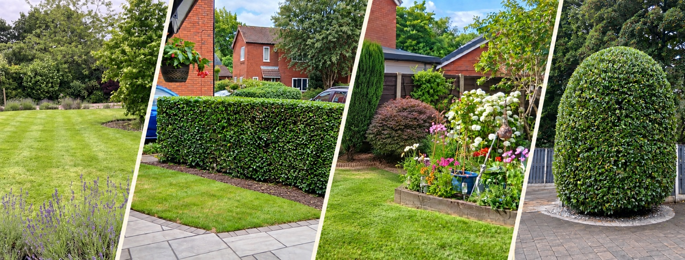

LOCAL GARDEN MAINTENANCE
Reliable garden care, without the fuss.
KS Garden Services provides friendly, dependable garden maintenance with careful attention to detail across Newton-le-Willows and surrounding areas.

Garden services
Regular visits, seasonal work and one-off jobs, with clear pricing and straightforward communication.
Regular maintenance
Lawn cutting, edging, border care, routine shrub and hedge trimming and general tidying.
Hedges & shrubs
Routine trimming, shaping and seasonal pruning, with larger reductions quoted separately.
Pressure washing
Patios, paths and suitable hard surfaces cleaned with the correct approach for the surface.
Why customers choose KS
✓ Friendly, reliable service
✓ Attention to detail
✓ Clear guide pricing
✓ Local service areas
Planning work in your garden?
Use the online price guide for a quick estimate, then send your details and photos for confirmation.
Get a guide price